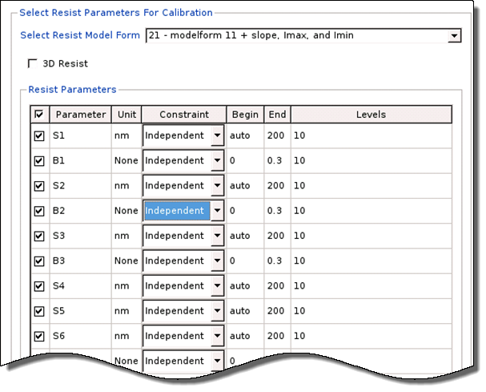

Creating a Resist Model Calibration Stage
The resist model is calibrated separately
from the optical and topo models.
Prerequisites
Calibre WORKbench invoked, and the Calibre nmModelflow tool running
Procedure
- Raise the Database
Browser tab in the list of primary display tabs.

- Click the Add
Using Wizard button.

- Create a Resist calibration stage first by choosing
Resist, then click Next.

The Select Resist Parameters page appears, similar to the following figure.
Results
The resist model calibration stage is added to the database.